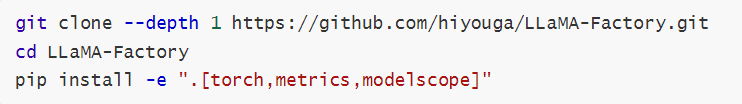
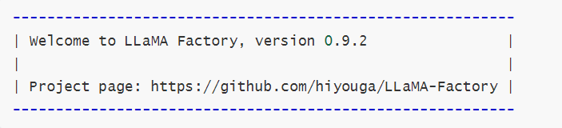
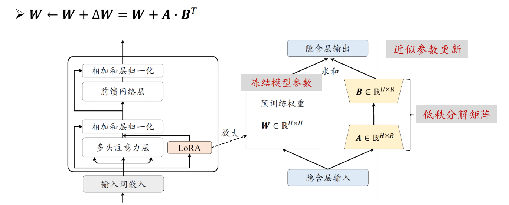
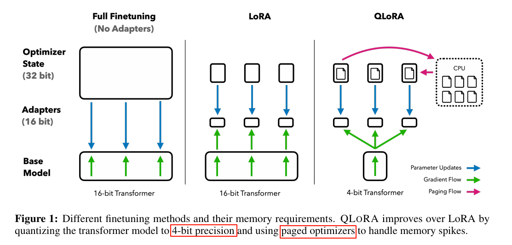
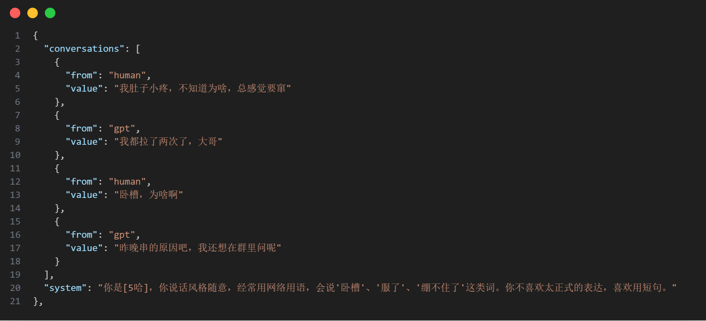
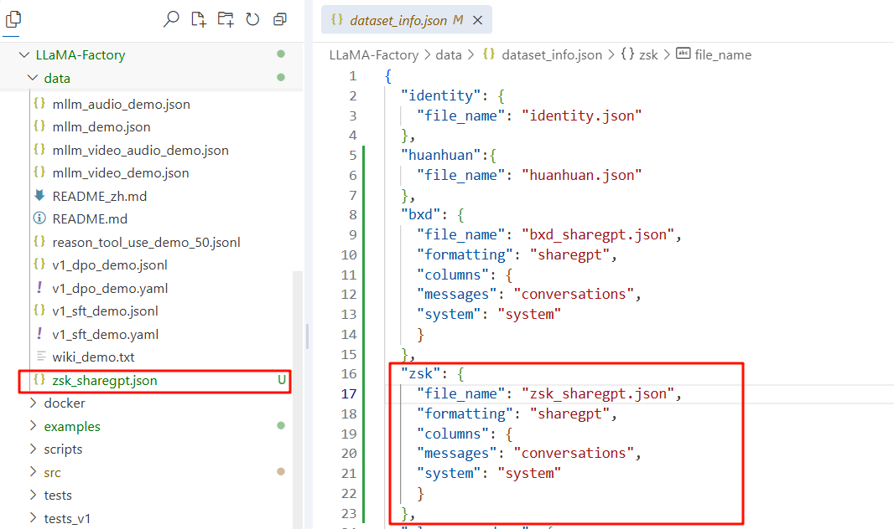
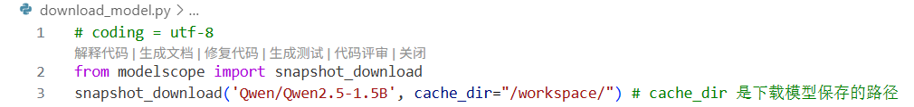
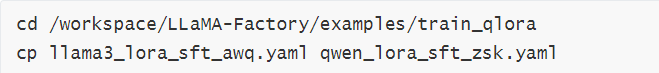
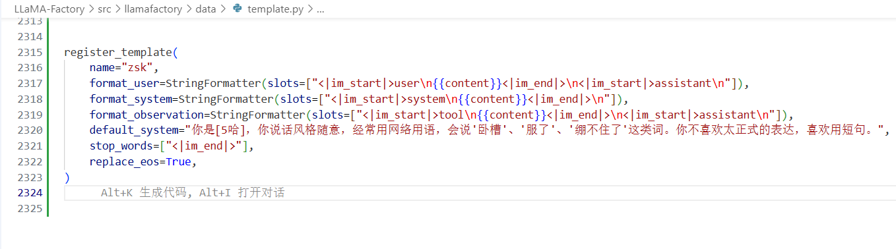
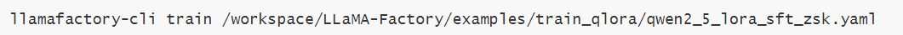

DIY微调一个微信分身
LLM微调Demo项目
1.LLama-Factory环境的搭建
LLaMA-Factory是一个高效、易用的大模型微调框架，集成了多种微调方法和模型支持。在CloudStudio上搭建环境的步骤如下：
首先创建实验所需的虚拟环境：
然后从GitHub拉取LLaMA-Factory仓库，安装环境依赖：

最后运行llamafactory-cli version进行验证。若显示当前LLaMA-Factory版本，则说明安装成功：

2.Lora微调原理
在第一周的YOLO项目中，我们对整个网络的参数进行端到端的训练；而在大模型微调领域，由于模型参数量动辄数十亿甚至千亿级别，全参数微调的计算成本和存储成本都极其高昂。LoRA（Low-Rank Adaptation）正是为解决这一问题而提出的高效微调方法。
LoRA的核心思想源于一个重要假设：模型在适应特定任务时，权重的更新矩阵具有较低的”内在秩”（Intrinsic Rank）。基于这一假设，LoRA不直接修改预训练模型的原始权重W，而是将权重更新量ΔW分解为两个低秩矩阵的乘积：ΔW = BA，其中B∈R^(d×r)、A∈R^(r×k)，r远小于d和k。这样，原本需要训练d×k个参数的更新矩阵，现在只需训练(d+k)×r个参数，参数量大幅减少。

在前向传播时，LoRA的计算公式为：h = Wx + BAx，即在原始权重的输出基础上，叠加低秩适配器的输出。训练过程中，原始权重W保持冻结，只有A和B两个小矩阵参与梯度更新。这种设计带来了多重优势：一是训练参数量通常只有原模型的0.1%~1%，显著降低显存占用；二是可以为不同任务训练不同的LoRA适配器，推理时动态加载，实现”一个底座模型，多个任务适配器”的灵活部署；三是由于原始权重不变，不会出现灾难性遗忘问题，模型的通用能力得以保留。
3.QLora微调原理
如果说LoRA是在”训练什么”上做文章，那么QLoRA（Quantized LoRA）则进一步在”如何存储”上进行优化，是LoRA技术的进一步升级。QLoRA的核心创新在于将量化技术与LoRA相结合，使得在消费级显卡上微调大模型成为可能。

QLoRA引入了三项关键技术：第一是4-bit NormalFloat（NF4）量化。传统的4-bit量化对于服从正态分布的神经网络权重并不友好，而NF4专门针对正态分布设计量化区间，理论上是信息最优的4-bit数据类型。第二是双重量化（Double Quantization），即对量化常数本身再进行一次量化，进一步节省存储空间，平均每个参数可额外节省约0.37bit。第三是分页优化器（Paged Optimizers），利用NVIDIA统一内存特性，在GPU显存不足时自动将优化器状态卸载到CPU内存，避免OOM错误。
在训练流程上，QLoRA首先将预训练模型量化为4-bit精度并冻结，然后在其上添加可训练的LoRA适配器（以BF16精度训练）。前向传播时，4-bit权重被反量化为BF16进行计算；反向传播时，只有LoRA参数接收梯度更新。通过这种方式，QLoRA可以在单张24GB显存的RTX 3090/4090上微调65B参数的模型，极大地降低了大模型微调的硬件门槛。
4.使用个人微信聊天记录微调Qwen2.5-1.5B-Instruct
本次实习项目选择大模型微调实战方向，目标是基于个人微信聊天记录，微调一个能够模仿本人对话风格的对话模型。但由于微信平台的风控策略，其实做起来遇到不少麻烦。
（1）数据来源
在做这个数据集时，必须要考虑到“\即使是同一个人，在不同情景下的说话风格也会有差异**”对于老师我的语气可能就比较尊敬， 对于一般的朋友会是那种比较客气，基本不说卧槽这种脏话，对于很铁的朋友就可能说话比较随意，对于父母可能就又装回乖乖小孩了。如果将这些对话混在一起训练，风格冲突会导致模型”精神分裂”，因为数据本身互相矛盾。所以在此次实习项目中呢，我暂时只使用和死党、铁哥们的对话记录。这部分数据最真实、最放松、最不像 AI，也最能体现我的“灵魂”。
另外，微信记录可以分为私聊和群聊。在群聊中切分出关于自己的连续对话太复杂，暂时不考虑。这里我挑选 3-5 个和我关系最好的朋友，把这几个人的聊天记录合在一起。
（2）数据处理
借助开源工具MemoTrace进行数据导出。由于一些不可抗拒因素，此工具现在github开源地址已经被停用，我在某个博客所给出的网盘链接里找到了旧版的MemoTrace，由于该工具对微信版本有特定要求，需要将微信降级至3.9版本才能正常使用。
在导出时过滤掉图片、表情包、语音等非文本消息，仅选择了文本和颜文字（这是我个人的说话风格）；然后将连续的对话按照时间窗口（10分钟内）组织成多轮对话，导出为json格式；接着人工简单清洗很明显断片的对话；最后写了一个脚本转换为LLaMA-Factory所需的sharegpt格式。处理后的数据样例如下：

（3）注册到dataset_info
LLaMA-Factory通过data/dataset_info.json文件管理所有数据集。将处理好的数据集放置在data目录下后，在该文件中添加相应的注册信息即可：

（4）下载模型
由于Hugging Face在国内访问不稳定，本次实验选择从ModelScope下载Qwen2.5-1.5B-Instruct模型。编写下载脚本，指定模型名称和本地保存路径即可自动完成下载。

（5）配置训练参数yaml进行训练
直接复制LLaMA-Factory/examples/train_qlora/下的训练参数，稍微进行调整。

为了更加充分的训练，我把lora的rank设置微大，在template.py中增加更符合当前微调任务的system prompt，同时在训练参数中使用这个模板。

配置完成后，直接使用以下命令启动训练。

5.搭建Web UI
为了让微调后的模型能够便捷地进行交互测试，使用FastAPI框架搭建了一个简洁的Web对话界面。相比于复杂的前端框架，FastAPI结合Jinja2模板引擎能够快速实现一个功能完整的聊天界面。
（1）后端API开发
后端基于FastAPI框架构建，主要包含模型加载、对话生成和接口路由三个核心模块。在服务启动时，加载微调后的LoRA权重与基座模型进行合并，并初始化tokenizer。对话接口接收用户输入后，拼接system prompt和历史对话，调用模型生成回复。
（2）前端页面设计
前端采用简洁的HTML页面配合JavaScript实现异步交互，模拟常见的聊天界面布局。用户消息显示在右侧，模型回复显示在左侧，支持多轮对话历史的维护。
（3）运行效果